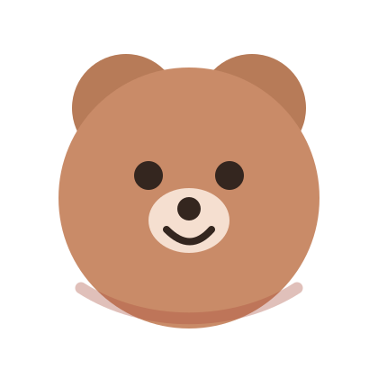

Món đầu tiên con kiên trì làm xong
Có thể chưa đều, chưa đẹp, nhưng đây là cột mốc đầu tiên: con đã bắt đầu một việc và hoàn thành nó bằng đôi tay của mình.
A tiny museum of yarn, patience & joy
Đây là nơi lưu giữ những món đồ len tự tay con làm — mỗi sản phẩm có tên, có câu chuyện, có ký ức, và có giá trị riêng.

Một bạn gấu len cỡ lớn, cao khoảng 50cm. Sản phẩm đánh dấu lúc con bắt đầu làm được những món phức tạp và kiên nhẫn hơn.
About this place
Little Yarn World được tạo ra để lưu lại hành trình handmade: từ những món đầu tiên còn vụng về, đến những sản phẩm ngày càng chỉn chu hơn. Nếu có món nào được nhận nuôi, khoản đó sẽ được đưa vào quỹ nhỏ để học cách tiết kiệm, mua vật liệu mới và tiếp tục sáng tạo.
Gallery
Ông có thể sửa dữ liệu sản phẩm trong file script.js.
Stories
Nên lưu cả những món chưa hoàn hảo. Sau này nhìn lại, phần đẹp nhất chính là thấy mình đã tiến bộ thế nào.
Có thể chưa đều, chưa đẹp, nhưng đây là cột mốc đầu tiên: con đã bắt đầu một việc và hoàn thành nó bằng đôi tay của mình.
Những phần phải tháo ra làm lại, những mũi len bị sai, những lúc muốn bỏ cuộc — tất cả đều là một phần của câu chuyện.
Handmade không chỉ là sản phẩm. Nó còn là thời gian, sự chú ý và tình cảm được đặt vào từng chi tiết.
Adoptable Friends
Đây không phải là shop sản xuất hàng loạt. Thỉnh thoảng, nếu có vài món nhỏ sẵn sàng đi đến một ngôi nhà mới, chúng sẽ xuất hiện ở đây. Mọi liên hệ đều do phụ huynh quản lý.
Chỉ nhận số lượng rất ít, ưu tiên giữ niềm vui sáng tạo. Các món lớn hoặc phức tạp chủ yếu để lưu niệm, không nhận đặt thường xuyên.
Craft Fund
Tiết kiệm dài hạn để học cách giữ lại giá trị mình tạo ra.
Mua len, kim, mắt thú, phụ kiện và vật liệu mới cho các ý tưởng tiếp theo.
Một phần nhỏ để tự thưởng, vì sáng tạo cũng cần niềm vui.
Contact
Nếu bạn thích một sản phẩm, muốn nhận nuôi một bạn len nhỏ, hoặc chỉ muốn gửi lời động viên, vui lòng liên hệ với phụ huynh qua email bên dưới.